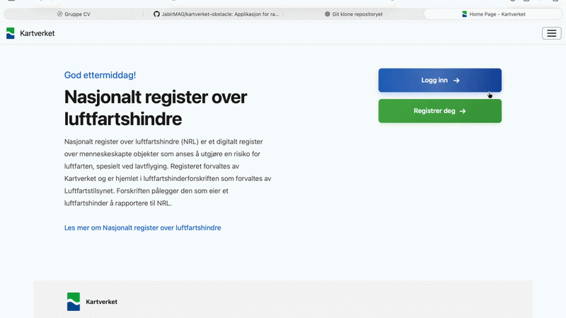

IT og informasjonssystemer
Hanna Falang
Om meg
Hei! Jeg heter Hanna Falang og er fra Lørenskog. Jeg er interessert i utvikling og design av nettsider, med særlig fokus på universell utforming og gode brukeropplevelser. Jeg synes det er viktig å skape løsninger som er tilgjengelige, intuitive og tilpasset ulike brukeres behov. I gruppearbeid legger jeg stor vekt på godt samarbeid og at alle får mulighet til å bidra med sine styrker og perspektiver. Jeg mener dette gir et bedre grunnlag for å utvikle gode løsninger sammen.
Utdanning
Bachelor i IT og informasjonssystemer
Universitetet i Agder
2024 – 2027
Prosjekter
Jeg har tidligere jobbet med et prosjekt for Kartverket, hvor min gruppe skulle utvikle en interaktiv kartløsning ved hjelp av HTML, CSS og JavaScript. I videoen under kan du se en demonstrasjon av hvordan funksjonen for å registrere seg fungerer. Denne funskjoenen var noe jeg blant annet hadde ansvar for.
